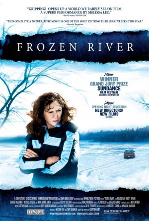

#7912 Frozen River - Auf dünnem Eis
Alternativ: Frozen River
Auszeichnungen: für 2 Oscars nominiert
 
 IMDB-Wertung: 7.2 / 10
IMDB-Wertung: 7.2 / 10  Metascore: 0
Metascore: 0 
Takes place in the days before Christmas near a little-known border crossing on the Mohawk reservation between New York State and Quebec. Here, the lure of fast money from smuggling presents a daily challenge to single moms who would otherwise be earning minimum wage. Two women - one white, one Mohawk, both single mothers faced with desperate circumstances - are drawn into the world of border smuggling across the frozen water of the St. Lawrence River. Ray and Lila - and a New York State Trooper as opponent in an evolving cat-and-mouse game.
Jahr: 2008
Dauer: 92 Minuten
FSK: 12
Land: USA Studio: Sony Pictures ClassicsTonspuren: DTS - ,
Untertitel:
Auflösung: 1080p (1920x1080) Größe: 5283 MB
Genre: Drama, Krimi, Weihnachten
Regisseur: Courtney Hunt
Drehbuch: Courtney Hunt
Soundtrack: Peter Golub, Shahzad Ismaily
Darsteller:
 Melissa Leo als Ray Eddy
Melissa Leo als Ray Eddy- Misty Upham als Lila Littlewolf
- Charlie McDermott als T.J.
 Michael O'Keefe als Trooper Finnerty
Michael O'Keefe als Trooper Finnerty Mark Boone Junior als Jacques Bruno
Mark Boone Junior als Jacques Bruno- James Reilly als Ricky
- Jay Klaitz als Guy Versailles
- Gargi Shinde als Pakistani Mother
- Rajesh Bose als Pakistani Father
- Craig Shilowich als Matt
- Brittany LeBorgne als Pat
- Betty Ouyang als Li Wei - Chinese Woman #1
 Pun Bandhu als Chinese Man #1
Pun Bandhu als Chinese Man #1- Scott Chan als Chinese Man #2
- Crystal Shade als Bingo Parlor Worker
- John Canoe als Bernie Littlewolf
- Dylan Carusona als Jimmy
- Michael Skye als Billy Three Rivers
- Azin Jahanbakhsh als Pakistani Dealer
- Jack Phillips als Pakistani Baby
- James Phillips als Pakistani Baby
- Madelyn Cross als Velma - Ticket Taker
- Donna Jacobs als Evelyn Littlewoof
- Trudy Rice als Rosalie
- Justin Kotyk als Mick
- Nancy Wu als Chen Li - Chinese Woman #2
- Joey Chanlin als Chinese Man #3
- Kenneth Fung als Chinese Man #4
- Brian Lashway als Rent-To-Own Man
- Paul Borst als Rent-To-Own Man
- Trisha M. Sky als Danceuses Nues Bartender
- Angelina Kent als Danceuses Nues Dancer
- Angus Curotte als Wolf Mart Attendant
- Adam Lukens als Mitch
- Thahnhahténhtha Gilbert als Little Jake
- Tom Messner als TV Weatherman
- Betty Deer als Mrs. Three Rivers
- Scott W. Beebie als Surete De Quebec Officer
- Gary Hemingway als Mobile Home Driver
- John K. Vanvalkenburg als Mobile Home Driver
- Jonathan T. Vanvalkenburg als Mobile Home Driver
- Pat Fisher als Mobile Home Customer
- Sherry Drinkwine als Mobile Home Customer
- Konwenni Jacobs als Wolf Mart Patron
- Catherine Deer als Wolf Mart Patron
- Melissa-Jean Deer als Wolf Mart Patron
- Patrice Jersey als Yankee One Dollar Patron
- David Jersey als Yankee One Dollar Patron
- Cameron Jersey als Yankee One Dollar Patron
- Lance Delisle als Bingo Caller / Disc Jockey
Datei: X:\2008(A-F)\Frozen River - Auf dünnem Eis (2008, FSK12, 1920x1080).mkv seit 06.01.2018
Festplatte: HD 2007(A-Z)-2008(A-F)
 Es gibt insgesamt 66 Filme in der Gruppe '2008(A-F)'
Es gibt insgesamt 66 Filme in der Gruppe '2008(A-F)'